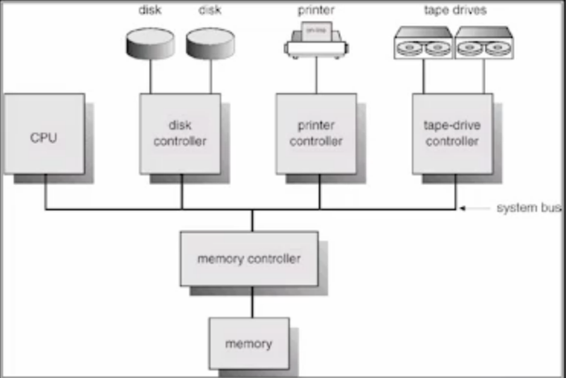

Operating System(OS)!!
운영체제도 이번 포스트를 시작으로 공부한 내용들을 하나씩 정리해 둘 생각이다. 당연한 말이지만 OS 열심히 해야된다 진쫘로 시작하겠다.
운영체제를 공부할 때는 평소처럼 사용자의 관점이 아니라 OS 개발자 입장에서 공부해야 한다는 것을 명심하고 공부하자!
내가 OS(Linux나 Ios같은)라고 생각하고 공부하자
=> 일을 어떻게 처리하는 것이 좋을까!
OS(운영체제)란 무엇인가?
평소에도 OS(운영체제)라는 말을 많이 들어보았을 것이다. Windows라던가 IOS라던가 그래서 OS라는 것은 정확하게 무엇일까?
OS란 컴퓨터 하드웨어 바로 위에 설치되어 사용자 및 다른 소프트웨어와 하드웨어를 연결하는 소프트웨어 계층이다.
인간의 신체가 뇌의 통제를 받아 움직이듯 컴퓨터의 H/W들은 OS의 통제를 받으며 그 OS는 사람이 프로그래밍을 통해 만든다!
- 좁은 의미에서의 OS는 **Kernel(커널)**이라고 부르는 운영체제의 핵심부만을 의미한다 이
kernel은 Memory에 상주한다. - 넓은 의미의 OS는 커널을 포함한 각종 시스템 유틸리티 전부(메모리에 상주하지 않는 독립적인 프로그램들)를 의미하는 개념이다.
전공자 입장에서 OS는 주로 Kernel만을 의마한다.
OS의 목적!
OS의 위치는 H/W 바로 윗단, 각종 S/W와 사용자의 바로 아랫단에 위치하므로 H/W를 효율적으로 관리하는 것이 OS의 가장 큰 역할이라고 할 수 있다.
=> Computer System의 자원(Resource)을 효율적으로 관리하는 것!
여기서 Resource란 CPU, Memory, 각종 I/O Device등을 의미한다.
- CPU, Memory, I/O Device는 H/W자원
- Process나 file, message등은 S/W 자원이라고 부른다. OS는 System안에서 H/W 자원 뿐만 아니라 S/W 자원도 관리해야 한다.
이들을 효율적으로 관리하는 것이 OS의 주목적인 것
OS의 목적을 나누어 보면!
-
효율성 : 첫 번째 목적은 주어진 자원으로 최고의 성능을 내도록 하는것 Computer System 내의 자원(Resource)는 이미 제공되어 있는 것! 초당 Instruction을 몇 개씩 처리하는 CPU와 몇 기가의 Memory 식으로
이미 제공받은 자원으로 최고의 효율로 동작하게 하는 것이 OS의 목적이라고 할 수 있다.
하지만 효율성만을 강조하다보면 특정 프로그램이나 특정 사용자가 차별받는 상황이 나올 수 있다. 그렇기 때문에 -
형평성 있는 자원분배 : 특정 프로그램이나 사용자가
차별 받지 않도록 자원을 형평성 있게 분배해 주어야 한다. -
컴퓨터 시스템을 편리하게 사용할 수 있는 환경을 제공 : OS는 사용자의 바로 아랫단에 위치하므로
사용자가 시스템을 편리하게 사용하는 것에도 목적을 둔다.
현대의 Computer는 여러 프로그램이 동시에 사용되는 것이 지원되는데 사용자 입장에서 독자적 Computer에서 수행되는 것처럼 보이게 하는 것도 OS의 역할이라고 할 수 있다.
=> 프로그램이 너무 많이 실행되다 보면 서로 Memory할당을 위해 충돌이 발생할 수 있다.이를 조율하는 것도 OS의 역할!
운영체제의 분류
운영체제(OS)를 어떻게 분류할 수 있겠는가?
- 동시 작업 가능 여부 : Single Tasking 인가 Multi Tasking인가?
- 사용자의 수 : Single User인가 Multi User인가 => 동시 접속이 가능한 지!
- 처리 방식 : Batch Processing(일괄 처리), Time Sharing(시분할), Realtime OS(실시간) 으로 나누어서 본다.
동시작업 가능 여부
-
Single Tasking(단일 작업)의 경우 한 번에 하나만 처리 하는 것.
-
Multi Tasking(다중 작업)의 경우 동시에 두 개 이상의 작업을 처리하는 것.
이전의 OS가 Single Tasking 만을 지원했다면 현재의 OS는 대부분 Multi Tasking을 지원한다!
사용자의 수
-
Single User(단일 사용자) : 과거에 Windows는 단일 사용자만 허용했다.
-
Multi User(다중 사용자) : 여러 사용자의 계정을 만들어서 동시에 접근할 수 있게한다. => 이 경우에는 보안등 처리할 것이 더 복잡하다.
처리 방식
-
Batch Processing(일괄 처리)란
작업 요청시 마다 바로바로 처리하는 것이 아니라, 작업 요청을 일정량 모아서 한꺼번에 처리하는 것을 말한다.
=> 현대의 OS에서는 찾아보기 어려운 처리 방식이다!
=> 역사 속의 System =>Interactive 하지 않다. -
Time Sharing(시분할 방식)이란
현재 우리가 사용 중인 컴퓨터가Time Sharing방식으로 처리하고 있다고 이해하면 된다! CPU로 여러 작업을 처리할 때컴퓨터의 처리 능력을 일정한 시간 단위로 분할하여 사용하는 것!
=> 내가 키보드를 두드렸을 때 바로 화면에서 결과를 확인할 수 있는Interactive한 방식이다.
=> 시간을 분할하여 처리하기 때문에 짧은 응답시간을 가지는 처리 방식이다!
하지만 사용자가 늘어나거나 처리해야할 작업량이 많아지면 응답시간이 늘어 나기도 한다.
Time Sharing의 목적은 사람이 느끼기에는 빠르게 처리되게 느끼게 하면서 주어진 자원을 최대한 효율적으로 사용하는 것에 있기 때문에 졍해진 시간을 정확히 맞춰서 처리해야하는 처리 방식은 아니다.
=> 사람에 특화된 처리 방식!
Linux, Unix, Windows, Ios 등의 OS는 모두 Time Sharing 처리 방식을 따른다.
- Realtime OS(실시간)란
그냥 보기에는 Interactive하고 Time Sharing과 비슷해 보일 수 있지만 이론적으로는 전혀 다른 처리방식이다.
처리시간에Deadline이 존재하고 그 시간안에 반드시 작업이 종료되어야 한다.
=> 이 때문에 Time Sharing은 범용 컴퓨터에서 주로 사용하고 Realtime OS는 특수한 목적의 시스템에서반드시 시간안에 해당 작업을 종료해야 하는 곳에 사용한다.(정교한 장비에 사용!)
Realtime OS는 두 가지로 분류할 수 있다.
-
Hard Realtime System(경성 실시간 시스템) : Realtime System에서 Deadline을 정확히 지키지 않으면 크게 문제가 발생하는 것을
Hard Realtime System이라고 한다 -
Soft Realtime System(연성 실시간 시스템) : Hard Realtime System에 비해 Deadline을 지켜야하지만 반드시 꼭 지켜지지 않아도 치명적인 문제를 야기하지는 않는 System을
Soft Realtime System이라고 한다.
ex) 멀티미디어 재생시 초당 24프레임을 읽고 인코딩해야 하지만 이게 처리되지 않으면 영상이 끊긴다 => 기분이 나쁘지만 기다릴 수 있다. Deadline은 있는 것!
OS 공부에서 언급될 운영체제는 대부분 Time Sharing과 관련된 내용이다!
OS에서 사용할 몇 가지 용어!
비슷한 내용의 다른 단어들이 있어서 이 곳에 간략하게 정리해 보겠다.
Multitasking
일반적인 의미로 많이 사용한다. 하나의 프로그램이 끝나기 전에 다른 프로그램이 실행될 수 있는 것을 의미!
Multiprogramming
여러 프로그램을 동시에 처리하려면 당연히 메모리에 여러 프로그램이 동시에 올라가 있어야 하지만, 메모리 부분을 강조해서 설명하는 것을 Multiprogramming이라고 한다.
Time Sharing
동시에 여러 작업을 처리하는 것은 동일하지만 CPU의 시간을 분할하여 나누어 쓰는 것을 강조한 것
MultiProcess또한 비슷한 의미로 위의 단어들과 같이 어떠한 작업을 동시에 처리하는 것을 의미한다.
Multiprocessor는 하나의 컴퓨터에 여러 Processor(CPU)가 붙어 있음을 의미하는 것!
OS의 예시
- UNIX :
-
코드의 대부분을 C언어로 작성!
-
높은 이식성 => portable하다
-
최소한의 Kernel 구조!=> 커널 크기를 최소화하고 핵심만 커널에! 때문에 확장성이 높아진다! -
다양한 버전이 있다.
UNIX는 대형 컴퓨터를 위해 만들어진 OS다.
- DOS(Disk Operating System)
- 초창기 단일 작업용 OS
- 단일 사용자용 운영체제, 메모리 관리 능력에 한계
- MS Windows
- MS사의 다중 작업용
GUI 기반 운영 체제 - Plug and Play, 네트워크 환경 강화
- DOS용 응용 프로그램과 호환성 제공
- 불안정성 => 초창기의 windows에서 불안정했지만 현재는 아니다!
- 풍부한 자원 소프트웨어
- Handheld Device를 위한 OS
- PalmOS, WinCE, Tiny OS 등
운영체제의 구조!
위의 OS 구조를 보았을 때 CPU와 Memory, Disk, I/O Device에 따라 역할을 나누어 보겠다.
- CPU
-
CPU는
처리 속도가 굉장히 빠른 장치이다. 이러한 CPU를 짧은 시간 간격으로 Process에 할당 분배하며 사용한다. -
그렇다면 빠른 처리 속도의 CPU를 어떤 Process에 할당할 것인가? 이를 정하는 것을
CPU Scheduling이라고 한다. -
현실에서는 선착순이 효율적이지만 Computer System안에서는 더 효율적인 스케줄링 기법을 필요로한다!
=> 한 작업을 온전히 끝내는 식으로 하면 효율적이지 않다. CPU를 줬다 뺏었다 하는 식으로!
- Memory
-
한정적인 Memory 공간에 여러 프로그램에 동시에 올리려고 할때 Memory를 N등분 하는 것이 효율적인가? =>
어떻게 Memory를 관리해야 하는가? -
CPU가 처리가능한 범주 내의 프로그램만 먼저 메모리에 올려두고(Working set에 올라 있는 프로그램만) 나머지는 Disk로 내려보낸다.
-
그렇다면 Memory에 공간이 없을 때 어떤 프로그램을 Disk로 내려보내야 하는가?
=> 미래에CPU할당이 필요없을 확률이 높은 것을 예측하여 Disk로쫒아낸다.
=> 과거의 경험을 통해 최근 사용량을 분석하여 머물 프로그램 & 쫒겨날 프로그램을 결정! -
Memory안에는 항상
Kernel이 상주하고 있다!
- Disk
-
Disk에 파일을 어떻게 보관해야 하는가?
=> 조각조각 나눠서 보관?? 연속적인 데이터로 보관??
=> 파일관리의 중요성! => Disk 특성에 맞게 파일 관리! -
Disk에 접근하기 위해선
Disk Head가 움직이면서 정보를 읽어야한다. -
효율적인 파일 관리를 위해
Disk도 Scheduling이 필요하다.
=> 디스크 스케줄링은 엘레베이터 스케줄링과 비슷하다!
=> 순서대로만 한다면 1층 -> 100층 -> 2층 -> 99층 식으로 Disk 헤드가 비효율적으로 움직여야한다!
=>같은 방향의 층은 태워서 같이!
하지만 CPU 스케줄링과는 성격이 다르다!
CPU는 너무 빠른 처리 속도 때문에 어떻게 관리할 지를 스케줄링!
디스크는 어떻게 헤더의 움직임을 줄이면서 효율적으로 일하게 할 수 있는가!
- I/O Device
-
I/O Device는
다른 자원에 비해 상당히 느리다! -
I/O Device들과 CPU는 어떻게 통신할 것인가!
=> 이를 입출력 관리라고 한다! -
입출력 관리는인터럽트(Interrupt)를 통해서 처리한다. -
빠른 CPU는 항상 자기 일하면서 I/O를 신경쓰지 않고 일하다가 I/O 장치가 처리를 필요로 하면 CPU에
인터럽트를 걸어서 알리면 CPU가 다음 작업을 하기 전에 I/O의 요청을 처리하게 된다.
1장 정리는 여기까지! 추가할 내용이 있다면 수정하도록 할 예정!